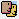
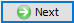
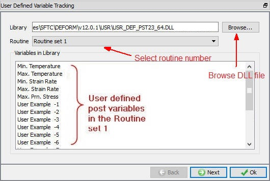
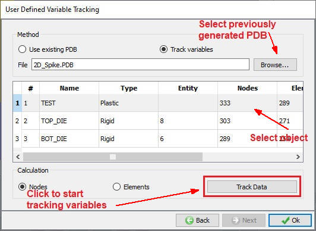
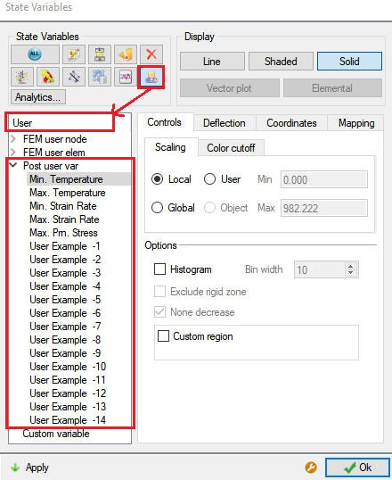

This allows the user to post process the user defined post variables defined in the post processor user routines. This is done by selecting the DLL file generated from the user routine, routine number (See Fig. 26.6.3.1.) in User defined variable tracking window and Clicking

allows the user to select object and calculation type (See Fig. 26.6.13.2.) Clicking on will track the state variables. After tracking the variables, they will be available for display in state variables dialog under User group. (See Fig. 26.6.13.3.)

User defined variables Library properties window

User defined variables Tracking properties window

User defined post variables accessing from State variables window
Once tracking the variables for particular DB is completed, it will generate the PDB in the problem directory, so in the next sessions of post processing user can select the existing PDB from the Tracking tab and then directly plot the user variables.
The Post processor user routine is available in the standard installation location,
C:\Program files\SFTC\DEFORM\v*_*\UserRoutine\PostProcessor\PC_pstusr23.f (where *_* is version number of deform) for PC. For more details on post processor
user routines refer the Chapter 56. User routine.